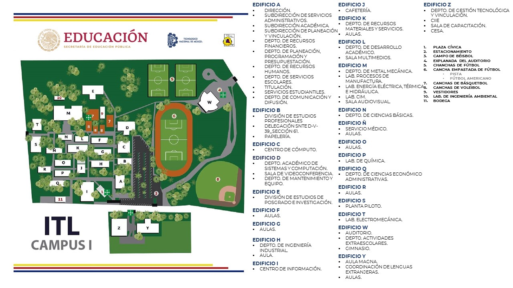

árbol
ñ
ü
¿
¡
Para buscar en internet:

CONTACTO
EMAIL
Enviar email
con asunto predefinido>
Pulsa aqui para bajar una copia del archivo
Pulsa aqui para descargar una copia del archivo
INDICE
Historia
En el año de 1970, cuando el Lic. Luis Echeverría Álvarez en calidad de candidato a la Presidencia de la República,
visitó la ciudad de León, prometió a los habitantes de la misma que si el voto popular lo llevaba a ocupar la primera
magistratura del país, haría realidad el anhelo de la población sobre la construcción de un Instituto Tecnológico.
Con la anterior promesa, los diferentes sectores se dieron a la tarea de coadyuvar en la construcción del mismo, así
fue como el señor Jorge Obregón Torres, ofreció donar los terrenos sobre los cuales se construiría el Instituto Tecnológico
de León. Con el mismo propósito, se formó un patronato pro-construcción del Tecnológico, quienes reunieron tres millones
de pesos, ya que esa cantidad era requerida por el gobierno federal para dar inicio a la construcción; el patronato era
presidido por el señor Pedro Michel Álvarez.
El Instituto Tecnológico de León, inicio sus actividades el 18 de septiembre de 1972, siendo Secretario de Educación Pública
el Ing. Víctor Bravo Ahuja; Sub-Secretario de Enseñanza Técnica y Media Superior, Dr. Héctor Mayagoitia Domínguez; y el cargo
de Director General de Educación Superior lo ocupaba el Ing. Martín López Rito. En diciembre de 1972, los alumnos de la
generación fundadora del Instituto, ofrecieron un sencillo homenaje a quienes hicieron posible con su esfuerzo, reunir entre el
pueblo la cantidad solicitada por el Gobierno Federal para llevar a efecto la construcción de lo que entonces era el I.T.R.L.
(Instituto Tecnológico Regional de la ciudad de León) No. 24.
El Tecnológico inició sus labores con una población escolar de 518 alumnos, distribuidos de la siguiente forma: 233 del plan
anual y 285 del plan semestral.
Mision, Vision y Valores
Misión
Formar profesionales íntegros que promuevan la cultura, los valores humanos y el conocimiento científico, que se orienten a un
crecimiento constante y trascendente manteniendo su arraigo con la sociedad mediante una conducta de servicio que permita
proporcionar calidad de vida a su comunidad.
Visión
En el año 2025 el Instituto Tecnológico de León, comprometido con un proyecto de alta calidad e innovación, congruente con su
naturaleza académica y pertinente con relación a las necesidades del país, se consolida en sus procesos educativos, con el
reconocimiento público en la búsqueda de la equidad, el humanismo y el compromiso con la construcción de una sociedad mejor.
Valores
Compromiso
Calidad
Equidad
Humanismo
Congruencia
Ubicacion e Infraestructura

INSTITUTO TECNOLOGICO DE LEON
MATERIA: PROGRAMACION WEB
ALUMNO: JOSE JAVIER GUTIERREZ RAMIREZ
MAESTRA: M.C. ANGELICA MARIA ORTIZ GAUCÍN
OTRAS ETIQUETAS
TAMAÑO DE LETRA h1
TAMAÑO DE LETRA h2
TAMAÑO DE LETRA h3
TAMAÑO DE LETRA h4
TAMAÑO DE LETRA h5
TAMAÑO DE LETRA h6
HAY COSAS IMPORTANTES
PARA DAR ENFASIS
E=MC2
ai,j =8 i,j+i
PARA TACHAR
PERMITE JUSTIFICAR EL TEXTO A LA IZQUIERDA CON
left O LO PUEDES HACER TAMBOEN A LA derecha O centrar
LISTAS ORDENADAS, NO ORDENADAS Y DE DEFINICION
LISTAS ORDENADAS
- Javi
- Cesar
- Abi
- io :v
LISTAS NO ORDENADAS
- HTML
- CSS
- JAVAScript
- Pyhton
LISTAS DE DEFINICION
- ANTICONSTITUCIONAL
- Que va contra la Constitución.